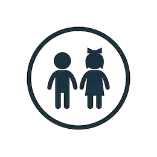

Es un servicio de atención de la modalidad institucional en donde se busca garantizar el servicio de educación inicial, cuidado y nutrición de los niños y niñas menores de cinco años, el cual, se desarrolla con acciones pedagógicas,
de cuidado calificado y nutrición, además se adelantan gestiones para promover los derechos de salud, protección y participación que permiten el desarrollo integral de los niños y niñas beneficiarios.
Dirigido a
Niños y niñas menores de cinco (5) años.
Prioridad en el acceso a niños y niñas desde los dos (2) años hasta menores de cinco (5) años, de familias trabajadoras vulnerables y los hijos de familias en situación de desplazamiento
forzado, entre otras, que necesitan encargar el cuidado, crianza y educación a una institución especializada.
Requisitos
Prioritariamente niños y niñas hijos de trabajadores cuyas circunstancias no permiten el cuidado en sus hogares y se encuentren en riesgo
de vulneración de sus Derechos.
Prioritariamente niños y niñas que no acceden a ningún servicio de educación inicial y no cuentan con red de apoyo para
su cuidado y educación, ya sea por vinculación laboral o estudios de padres o madres o cuidadores, u otras circunstancia comprobadas.
Víctimas de hechos
violentos asociados al conflicto armado, de acuerdo con las directrices establecidas en la Ley 1448/2011 y los Decretos ley 4633, 4634 y 4635 de 2011.
Egresados
de las modalidades de Recuperación Nutricional: Centros de Recuperación Nutricional – CRN, Entornos saludables y Recuperación Nutricional para los primeros 1000 días o remitidos por el Centro Zonal.
Que se encuentran en Proceso Administrativo de Restablecimiento de Derechos-PARD.
Pertenecientes a familias identificadas
a través de la Estrategia para la Superación de la Pobreza Extrema – Red UNIDOS.
Remitidos por las entidades del SNBF que se encuentren en situación de
vulnerabilidad o riesgo de vulneración de derechos.
Pertenecientes a comunidades étnicas (indígenas, comunidades negras, afrocolombianas, Palenqueros, Raizales
y Rrom).
Con discapacidad, que cumpla con al menos uno de los criterios de priorización.
Pertenecientes
a hogares cuyo puntaje SISBEN III (Sistema de Información de Potenciales Usuarios) sea igual o inferior a los nuevos puntos de corte definidos para Primera Infancia.